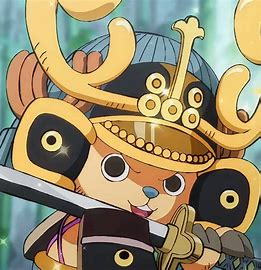

Alias: Pecinta Permen Kapas. Jabatan: Dokter. Tebusan/Bounty: ฿1,000
Tony Tony Chopper, juga dikenal sebagai "Cotton Candy Lover" Chopper,[6] adalah dokter Bajak Laut Topi Jerami dan salah satu Perwira Senior Armada Besar Topi Jerami. [2] Dia adalah anggota kru keenam dan kelima yang bergabung, melakukannya di akhir Drum Island Arc. Dia untuk sementara dipaksa untuk bergabung dengan Bajak Laut Foxy selama Long Ring Long Land Arc tetapi dengan cepat dikembalikan ke kru Luffy.
Chopper adalah rusa kutub yang memakan Hito Hito no Mi, Buah Iblis yang memungkinkan penggunanya berubah menjadi hibrida manusia sesuka hati. Dia diajarkan kedokteran di Pulau Drum oleh dua tokoh orang tuanya, Dokter Hiriluk dan Kureha. Chopper bertujuan untuk bepergian ke seluruh dunia dengan harapan mencapai mimpinya untuk dapat menyembuhkan penyakit apa pun.
Chopper mendapatkan hadiah pertamanya 50 setelah insiden di Enies Lobby, setelah disalahartikan sebagai hewan peliharaan Topi Jerami. Setelah Arc Dressrosa, itu ditingkatkan menjadi 100, kemudian menjadi 1.000 setelah Raid on Onigashima.
Rupa
Sebagian besar waktu, Chopper adalah hibrida manusia/rusa seukuran balita, tetapi kemampuan Buah Iblisnya memungkinkannya untuk mengubah penampilannya tergantung pada situasinya. Tanduk kiri Chopper diikat di pangkal oleh pelat logam karena dipasang kembali setelah patah selama pencariannya untuk Amiudake ketika dia masih muda (ketika dia pikir Amiudake dapat menyembuhkan penyakit Hiriluk) dan bertemu dengan pemimpin kawanan lamanya, yang melukainya dengan parah. [13] Dia biasanya mengenakan topi fuzzy merah pucat pucat besar dengan salib medis menyamping (diberikan kepadanya oleh Hiriluk) dan celana pendek merah marun. Dia juga terkadang memakai ransel biru yang memiliki salib medis menyamping yang sama dengan topinya. Dia juga memiliki hidung biru yang luar biasa. Seiring berkembangnya gaya Oda dan banyak pembaca berkomentar tentang betapa lucunya Chopper, Chopper diberi penampilan yang jauh lebih "chibi", yang berarti bahwa ketika dalam transformasi pilihannya (yang dia sebut Brain Point), dia memiliki kepala dan mata yang lebih besar dan moncong yang kurang jelas daripada sebelumnya dalam seri. Banyak karakter wanita, seperti Nami, Robin, Makino, Porche, Shakky, dan Vivi menganggap Chopper sangat lucu. Bahkan ada laki-laki yang menganggap Chopper lucu seperti Foxy dan Breed.
Lelucon yang berjalan adalah bahwa berbagai karakter dalam One Piece berpikir Chopper adalah tanuki (anjing rakun, sering diterjemahkan secara sederhana sebagai "rakun") saat dalam bentuk Brain Point atau hibrida. Kata "tonakai", yang merupakan kata Jepang untuk "rusa", adalah dari mana "Tony" dalam nama Chopper berasal. Heavy Point atau bentuk manusianya juga disalahartikan sebagai gorila (atau manusia salju yang keji di pulau asalnya).
Mirip dengan kebanyakan kru prianya, Chopper memiliki pakaian yang sama di sebagian besar seri.
Di Arc Arabasta, dia mengenakan kemeja putih dengan kerah bergaris hijau, lalu yang lebih besar dengan lengan raksasa yang berwarna biru muda dengan liner biru tua.
Di Arc Lobi Enies, dia mengenakan jaket kulit merah.
Di Post Enies Lobby Arc, dia mengenakan t-shirt biru dengan logo putih Galley-La Company di atasnya.
Dalam Thriller Bark Arc, dia mengenakan kalung salib.
Setelah dua tahun, Chopper secara signifikan lebih ramping. Dia kurang berperut buncit daripada di musim-musim sebelumnya dan lengan/kaki depannya juga lebih kurus. Bisa dikatakan bahwa sejak meninggalkan iklim dingin di Pulau Drum, dia telah kehilangan lemak tubuh yang signifikan. Warna bulunya telah berubah dari coklat menjadi emas, dan menurut Nami (ketika dia dan Chopper bersatu kembali di Sabaody), teksturnya menjadi lebih lembut.
Chopper sekarang memakai topi biru yang memiliki cincin titik-titik di sekitar lingkaran, sedangkan topi memiliki gesper yang menggantung di atasnya. Dia memakai ini di atas topi merah muda tuanya. [14] Dia juga mengenakan tank top bergaris vertikal putih dan kuning, yang dia lepas ketika dia berubah menjadi Heavy Point dan celana pendek oranye. Selain sedikit lebih ramping dan bulunya berubah dari coklat tua menjadi warna coklat muda, bentuk Brain Point Chopper tidak berubah. Bentuk Walk Point (rusa) miliknya telah berkembang pesat, sekarang kira-kira setinggi Usopp. Tanuknya lebih besar, dia memiliki lebih banyak otot, dan bulunya lebih panjang. Titik Beratnya menjadi sangat besar dan lebih berotot, hampir seukuran Dosun. Dia juga mengembangkan transformasi baru melalui penelitiannya selama timeskip, yang dia debutkan di Pulau Manusia Ikan, termasuk Kung Fu Point (yang dia gunakan untuk mengalahkan tentara Neptunus) dan Horn Point yang direvisi (yang dia gunakan untuk melawan Daruma).
Saat berada di Punk Hazard, dia diberi mantel hitam oleh Kin'emon menggunakan kekuatan Buah Iblisnya. Dia kemudian mengenakan pakaian samurai yang terbuat dari kemampuan yang sama ketika kru berangkat dari Punk Hazard.
Di awal Arc Dressrosa, Chopper mengenakan pakaian kamuflase. Setelah kru berpisah, dia mengganti tutup kepalanya untuk pertama kalinya sejak timeskip, mengenakan helm sepak bola dengan lubang untuk tanduknya yang memiliki tiga garis horizontal yang berjalan vertikal di tengah, dengan dua yang kecil di samping satu yang lebih besar, serta bintang besar di setiap sisi helm. Dia juga mengenakan mantel ritsleting dengan pola garis yang sama yang membentang secara horizontal di sekitar bagian tengah mantel, dengan warna garis terbalik pada helm dan pola bintang di dalam garis besar pada mantel.
Selama tinggal di Zou, pakaian Chopper terdiri dari topi timeskip aslinya dengan mahkota di atasnya. Dia tidak mengenakan kemeja dan memiliki mantel terbuka panjang dengan bulu dan perhiasan mewah yang terpasang. Setelah meninggalkan Zou, Chopper mengenakan mantel dokter terbuka.
Selama Arc Whole Cake Island, dia mengenakan mantel kuning dan memiliki syal merah muda yang melilit topinya. Setelah itu, ketika bertemu dengan Bajak Laut Tank Pemadam Kebakaran dia mengenakan pakaian yang mirip dengan Luffy, setelan hitam (biru tua di anime) dengan kemeja hijau dan ascot kuning.
Selama Arc Negara Wano, dia mengenakan pakaian ninja hijau. Kemudian, sebelum penyerbuan di Onigashima, Chopper mengenakan baju besi samurai hijau kebiruan gelap, lengkap dengan helm Kabuto dan Katana. Selama Raid di Onigashima, Chopper beralih ke satu set baju besi samurai baru, kali ini berwarna merah, dengan helm Kabuto merah yang serasi, dan katananya di sisi pinggulnya. Ketika Kin'emon menggunakan kemampuan Buah Iblisnya lagi untuk menyamarkannya, dia mengenakan penyamaran Bajak Laut Beasts dengan mantel bulu gelap dan topi bertanduk satu dengan simbol seperti bintang di tengahnya. Sementara di bawah pengaruh virus Ice Oni, tubuh dan baju besi Chopper menjadi sebagian membeku, dengan Chopper perlahan-lahan mengembangkan penampilan yang sedikit lebih setan dan bahkan taring parsial. Penampilan Chopper kembali normal tak lama setelah memberikan countervirus.
Selama Egghead Arc, Chopper mengenakan mantel panjang berkerudung biru langit dengan logo SSG di bagian depan. Dia juga memakai Topi yang serasi yang menyerupai helm luar angkasa tetapi dengan pelindung oranye pucat yang terpasang dan kacamata yang serasi juga di atasnya. Dia juga memakai lubang suara dan sepasang Sepatu DOM merah muda panas
Selama Arc Elbaph, Chopper saat ini telah menerima pakaian bergaya viking karena Road memenjarakannya di Land of Gods-nya. Pakaian Chopper terdiri dari terusan biru dan merah muda bergaris panjang dengan ikat pinggang kulit merah, jubah bulu putih, dan helm viking merah dan emas besar tanpa tanduk di atas topinya, bersama dengan dekorasi emas yang menutupi ujung tanduknya.